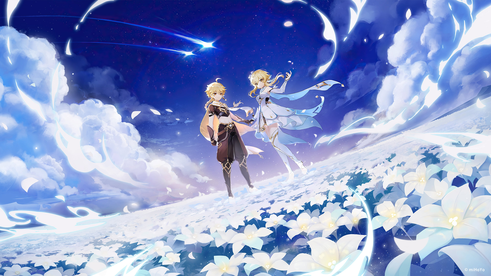

Genshin Impact Review
A beautiful open-world RPG with addictive exploration and strong character design.
Overview
Genshin Impact is an open-world action RPG developed by HoYoverse. The game combines anime-inspired visuals, elemental combat, exploration, and gacha mechanics.
Since launch, the game has expanded massively with multiple regions, story arcs, and playable characters.
The story revolves around the player character, known as the Traveler, who is searching for their lost sibling across the world of Teyvat.
Gameplay
Combat revolves around elemental reactions. Combining elements like Hydro, Pyro, and Electro creates satisfying combos during battles.
Exploration is one of the strongest parts of the game. Every region feels unique and encourages players to discover secrets, puzzles, and hidden quests.
Visuals & Music
The environments are visually impressive, especially newer regions with improved lighting and environmental detail.
The soundtrack is consistently excellent and helps every region feel memorable and immersive.
Pros
- Beautiful open world
- Great soundtrack
- Fun elemental combat
- Large amount of content
Cons
- Heavy reliance on gacha mechanics
- Grinding can become repetitive
- Some story pacing issues
Final Verdict
Genshin Impact remains one of the strongest free-to-play RPG experiences available today. While the gacha system may not appeal to everyone, the exploration, visuals, and gameplay make it worth trying.